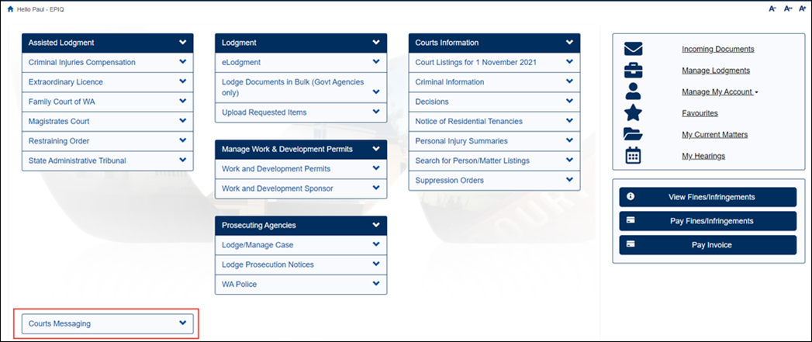
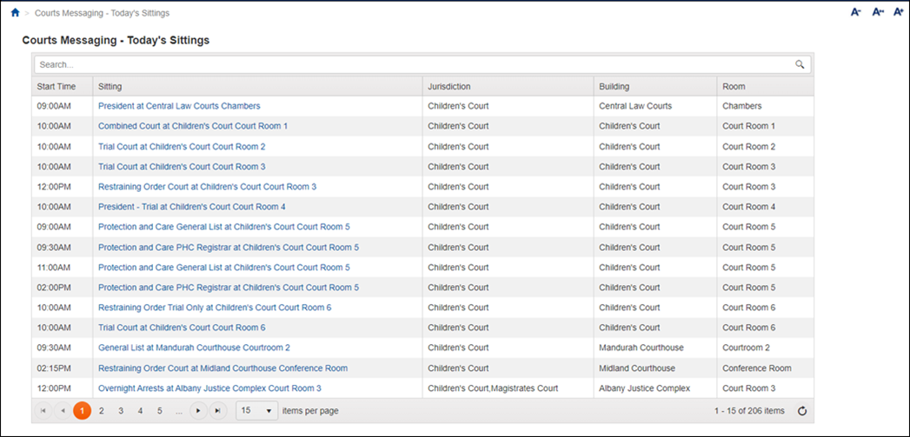
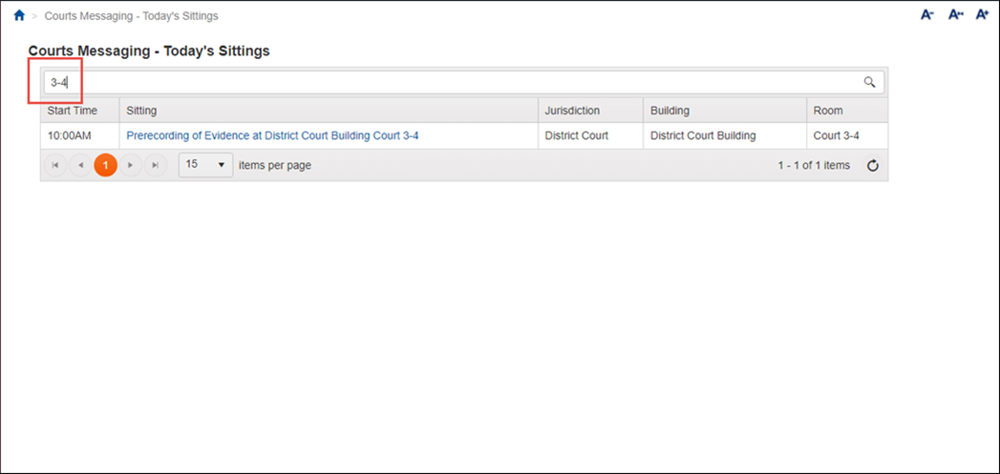
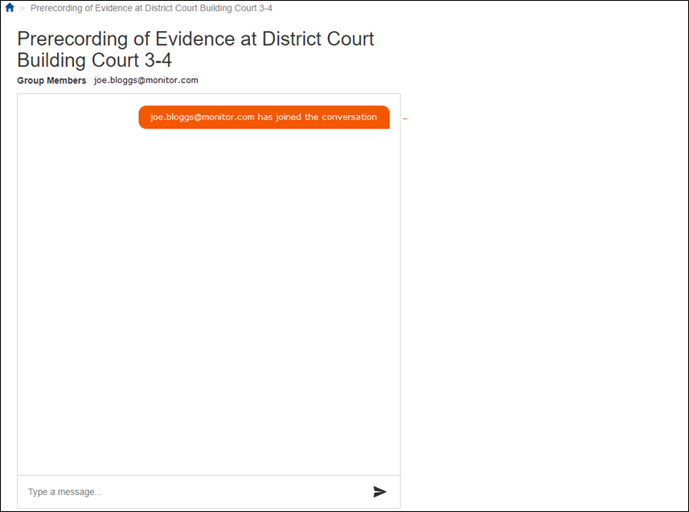
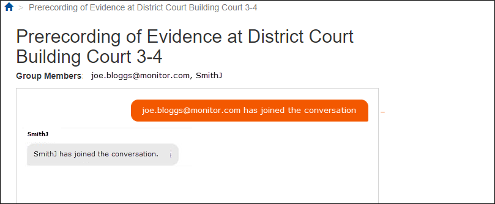
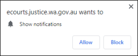
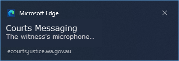

|
|
eCourts Portal of Western Australia - Help: Courts Messaging |

Courts Messaging is only available to court monitors. Once your eCourts Portal account has been set-up, and you have logged in, you can use Courts Messaging to communicate with associates and monitors in court rooms for today.
01. Click on the Courts Messaging link.

All sittings (courts) for today’s date (for all courts and all buildings) display in a new screen.

NOTE: If a new sitting is created on the same day of the hearing after you have displayed this screen, then do a fresh search of sittings to see it.
02. Type the name of the room that you wish to monitor into the Search… field.

All of the other courts disappear.
NOTE: Alternatively, click the page number/arrow buttons at the bottom of the screen to go through the list of courts to find the one you want.
03. Click on the room name in the Sitting column (this is actually a link).
You are entered into the conversation for the sitting (court), which displays in a new browser tab

NOTE: You can enter a Courts Messaging screen in the eCourts Portal for multiple sittings at the same time. Each will display in their own browser tab.
Once another person enters the conversation their username appears in the Group Members field and a message appears in the conversation.

04. Once everyone is in the same Courts Messaging sitting (court) send a message by typing text into the Type a message… field and press Enter on your keyboard.
The new message appears in the conversation.
NOTE: If one of the conversation’s members closes the Courts Messaging screen for that sitting a message appears stating that they have left.
05. After another person sends you a message for the first time through Courts Messaging you may see a popup regarding notifications. If you do, click Allow.

The popup closes. Every time another person posts a new message to the conversation a notification appears at the bottom of your screen.

NOTE: You can leave your PC idol (e.g. during lunch break) and you will still receive new messages in the conversation. You won’t be automatically logged out of the eCourts Portal.
Frequently Asked Questions
A new court sitting has been created today, why can’t I see it in the list?
Courts Messaging gets all today’s sittings directly from ICMS. If a new one has been created in ICMS for today then perform a fresh search and it will appear.
If it doesn’t then check with the Court that they have finished creating the sitting in ICMS.
If I have entered a conversation and late leave my PC idol (e.g. to go to lunch) how long before the eCourts Portal times out?
If the conversation is still going, and it is still today, then the eCourts Portal won’t time out.
How do I monitor multiple courts simultaneously?
Find the first sitting in the Today’s Sitting screen and open it by clicking on the link. This opens the conversation for the sitting in a new browser tab. Then return to the Today’s Sitting tab, find the next sitting and click on that link too. You will end up with a tab open for each sitting (court) that you are monitoring.
You will need to click on each tab regularly to check for new messages.